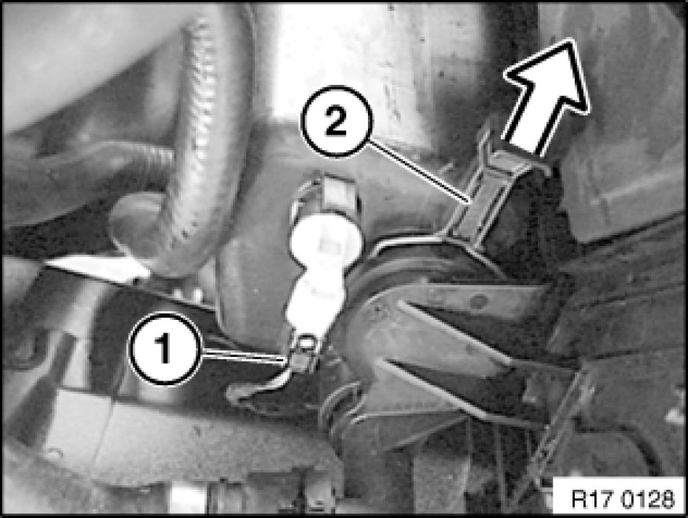
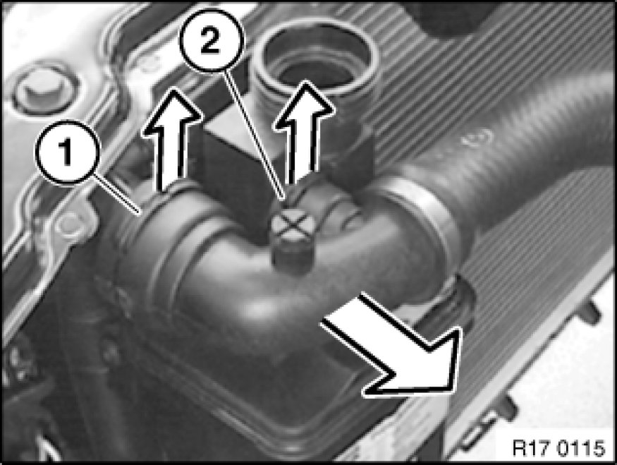
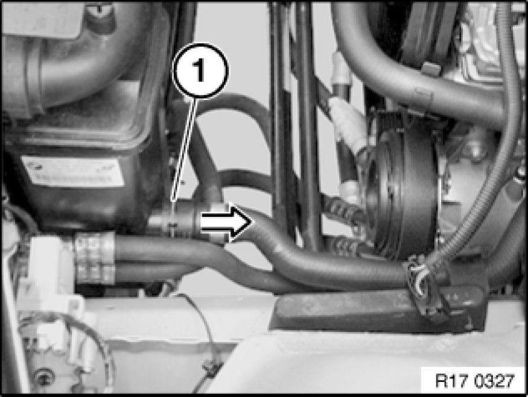
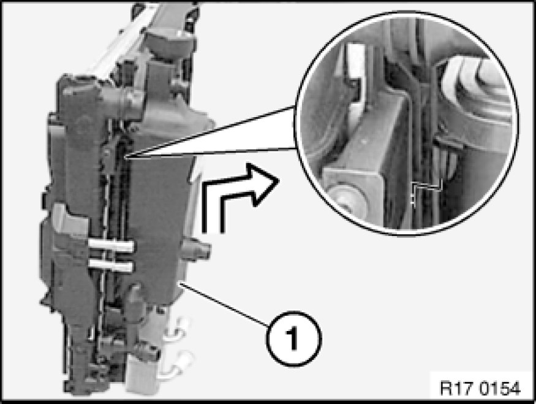

Removing and Installing/Replacing Coolant Expansion Tank (M54/N46)
17 11 100 - Removing and installing/replacing coolant expansion tank (M54/N46)

Warning!
Danger of scalding!
Only perform this work after engine has cooled down.

Necessary preliminary tasks:
- Follow instructions for working on cooling system 17 00 ... Instructions For Working on Cooling System
- E85:Remove radiator cover
- E83: Remove intake duct
- Remove fan cowl
- Draining coolant

Unfasten plug connection (1) and disconnect.
Withdraw lock (2).

Pull locks (1 and 2) upwards and detach coolant hose from radiator/coolant expansion tank.

Pull lock (1) upwards and detach coolant hose from coolant expansion tank.

Illustration with radiator removed.
Pull coolant expansion tank upwards slightly out of carrier plate and pull out lower connection piece. Then tilt expansion tank to rear and remove.
Installation Note:
Check sealing rings. Do not under any circumstances coat sealing rings with antiseize agent before installation.
Retaining lug must engage in opening on carrier plate.